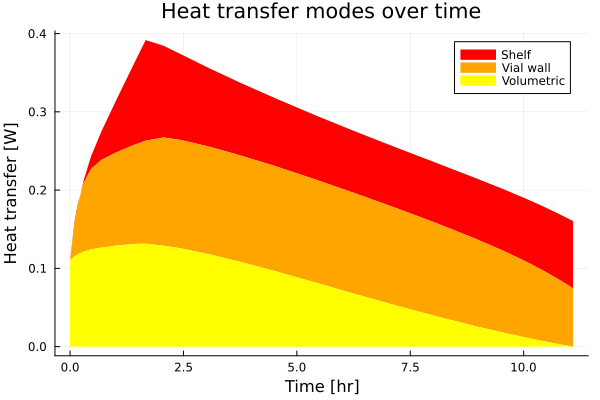

Extending Fits with New Experimental Data Types
The ExpFitData type is designed to be extensible, so that other types of experimental data beyond those already implemented can be used in the parameter fitting framework. This is done by defining a new subtype of LyoPronto.AbstractExpDatum and implementing the required methods for that type. We will demonstrate this here, with two examples: one which represents a total measurement of $Q_{vw-f}$ (heat transfer from vial wall to frozen product) across all of drying, and one which represents a measurement of this heat transfer at specific time points. !!! note Synthetic example These types of data are not necessarily easy to measure or useful to lyophilization design, but these will work as simple examples to demonstrate the code's interface.
using LyoPronto# We will be extending the following functions with new methods, so we need to `import` themimport LyoPronto: AbstractExpDatum, resid_name, obj_exp_datum, err_exp_datum!# Other packages we needusing TypedTablesusing Plotsusing StatsPlots: @dfDemonstration case
For demonstration, we will use the model for microwave-assisted lyophilization, with conditions like those in Fitting to Microwave Drying.
vialsize = "6R"rad_i, rad_o = get_vial_radii(vialsize)A_p = π*rad_i^2 # cross-sectional area inside the vialA_v = π*rad_o^2 # vial bottom aream_v = get_vial_mass(vialsize)# Formulation and fillc_solid = 0.05u"g/mL" # g solute / mL solutionρ_solution = 1u"g/mL" # g/mL total solution densityR0 = 1.4u"cm^2*hr*Torr/g"A1 = 16.0u"cm*hr*Torr/g"A2 = 0.01u"1/cm"Rp = RpFormFit(R0, A1, A2)Vfill = 5u"mL"# Heat transferKC = 2.75e-4u"cal/s/K/cm^2"KP = 8.93e-4u"cal/s/K/cm^2/Torr"KD = 0.46u"1/Torr"K_shf = RpFormFit(KC, KP, KD)# Geometryh_f0 = Vfill/A_pm_f0 = Vfill * ρ_solution# RF fit parametersBf = 5.0e8u"Ω/m^2"Bvw = 1.1e7u"Ω/m^2"Kvwf = 22.3u"W/K/m^2"# Controllable inputsf_RF = 8u"GHz"Tsh = RampedVariable(uconvert.(u"K", [-40.0u"°C", 10.0u"°C"]), 0.5u"K/minute")pch = RampedVariable(100u"mTorr")# Total of 10W nominal power, multiplied by 0.54 to account for system lossesP_per_vial = RampedVariable(10u"W"/17 * 0.54) # actual power / vialpo = ParamObjRF(( (Rp, h_f0, c_solid, ρ_solution), (K_shf, A_v, A_p), (pch, Tsh, P_per_vial), (m_f0, LyoPronto.cp_ice, m_v, LyoPronto.cp_gl), (f_RF, LyoPronto.eppf, LyoPronto.epp_gl), (Kvwf, Bf, Bvw),))base_sol = solve(ODEProblem(po), LyoPronto.odealg_chunk3)retcode: Terminated
Interpolation: specialized 4th (Rodas6P = 5th) order "free" stiffness-aware interpolation
t: 69-element Vector{Float64}:
0.0
0.1
0.17061238907357967
0.2983185121518719
0.46385893318193705
0.6897456225251501
1.0255318480671787
1.4092808989682446
1.6666666666666667
2.056035271752815
⋮
11.089513032354457
11.089513036334463
11.08951303884542
11.089513040495449
11.089513041536442
11.089513042220512
11.089513042652086
11.089513042935687
11.089513043071124
u: 69-element Vector{Vector{Float64}}:
[5.0, 233.14999999999998, 233.14999999999998]
[4.995438967678863, 236.9087268327139, 238.88875322817526]
[4.985493377910452, 238.89704151501795, 241.7566089723013]
[4.956286861999994, 241.40703137582938, 245.3652755477621]
[4.904694127404679, 243.67174862682367, 248.37639288005465]
[4.819749480307834, 246.19194724415283, 251.3908698883352]
[4.671576552815337, 249.67226124856808, 255.36841217453392]
[4.472835144758677, 253.5189117907176, 259.8132490462152]
[4.322048560874875, 255.99888596885413, 262.7534389623081]
[4.079179831009077, 258.3787344504106, 265.8631463307899]
⋮
[2.991106342703887e-9, 264.87680068202536, 313.3174974129898]
[1.9126818732772043e-9, 265.12404069256445, 313.3174974735967]
[1.2400523709915088e-9, 264.8768006268917, 313.31749751157315]
[7.929593835032528e-10, 265.12404066491274, 313.3174975366996]
[5.141007245258842e-10, 264.8768006080642, 313.3174975524438]
[3.287449827056194e-10, 265.12404067484545, 313.3174975628607]
[2.1313582291994867e-10, 264.8768007110776, 313.31749756938797]
[1.3629104957276827e-10, 265.12404063542135, 313.31749757370653]
[1.0000015101824183e-10, 264.9304933335642, 313.31749757575506]Let's take a look at the heat transfer modes over time.
qs = Table(map(base_sol.u, base_sol.t) do u, t calc_md_Q(u, po, t)end)# LyoPronto provides a slick plot recipe for this, which stacks up the values over time so you can visually compare areast = base_sol.t*u"hr"@df qs areastackplot(t, :Q_shf, :Q_vwf, :Q_RF_f, c=[:red :orange :yellow], labels=["Shelf" "Vial wall" "Volumetric"], xlabel="Time", ylabel="Heat transfer", title="Heat transfer modes over time", unitformat=:square)
We will use this base solution to create some synthetic experimental data
First, do a Riemann integration to get total Q_vwf
t_weights = (vcat(0u"hr", diff(t)) + vcat(diff(t), 0u"hr"))/2total_Qvwf = sum(qs.Q_vwf .* t_weights)1.3257069146982055 hr WNow, evaluate Q_vwf at specific time points
t_exp = range(0.0u"hr", stop = 5.0u"hr", step=10u"minute")t_exp_nd = ustrip.(u"hr", t_exp)Q_vwf_exp = [calc_md_Q(base_sol(ti), po, ti).Q_vwf for ti in t_exp_nd]31-element Vector{Unitful.Quantity{Float64, 𝐋^2 𝐌 𝐓^-3, Unitful.FreeUnits{(W,), 𝐋^2 𝐌 𝐓^-3, nothing}}}:
0.0 W
0.06263412844074141 W
0.09196793884899858 W
0.10507555679914965 W
0.11140204955368468 W
0.11545440654142278 W
0.11877224489369706 W
0.1219331022279927 W
0.12511609707960347 W
0.12835105327757276 W
⋮
0.13627861968206614 W
0.13589117458001632 W
0.1354897281397689 W
0.13508696776611204 W
0.1346855180295458 W
0.13427257488196429 W
0.13382965152250162 W
0.1333656753667517 W
0.1328964834655291 WSet up the experimental data types
We will define two new types of experimental data, one for the total Qvwf and one for the time series of Qvwf.
The TotalQvwf type will represent a single measurement of the total heat transfer from the vial wall to the frozen product over the entire drying process. All it needs to store is a single value of Q_vwf.
struct TotalQvwf{T} <: AbstractExpDatum Q_vwf::TendNow, we need to define the required methods for this type.
LyoPronto.time_bound_data(::TotalQvwf) = falseLyoPronto.resid_name(::TotalQvwf) = :Qvwf_totalDefine a residual (for nonlinear least squares fitting) and a loss (for optimization-solver least squares fitting).
# Loss function: just returns the errorfunction LyoPronto.obj_exp_datum(sol, st, dat::TotalQvwf) # `st` gets computed internally and used to evaluate the solution only at time points # where model and experiment are both available q_series = model_result(sol, st; var=:Q_vwf) # Trapezoidal integration over time, really concisely tweight = (x->(vcat(0, x)+vcat(x,0))/2)(diff(sol.t))*u"hr" qinteg = sum(q_series .* tweight) |> u"W*hr" # The residual is the difference between the model's total Q_vwf and the experimental value return (qinteg - dat.Q_vwf)^2end# Residual function: fills the error in place in an array, returns number of filled indicesfunction LyoPronto.err_exp_datum!(err_array, i0, sol, st, dat::TotalQvwf, weight) q_series = model_result(sol, st; var=:Q_vwf) # Trapezoidal integration over time, really concisely tweight = (x->(vcat(0, x)+vcat(x,0))/2)(diff(sol.t))*u"hr" qinteg = sum(q_series .* tweight) |> u"W*hr" # The residual is the difference between the model's total Q_vwf and the experimental value # `io` is the last index that was filled into the array err_array[i0+1] = (qinteg - dat.Q_vwf) * weight # The number of residuals filled is 1, since this is a single measurement return 1endThe TimeSeriesQvwf type will represent a series of measurements of Q_vwf at specific time points. Since this may or may not be evenly spaced or at the same time points as other measurements, we have fields for a time vector and for a range of indices, but these may be simply set to missing if not needed. For this example, we will not set those values.
struct TimeSeriesQvwf{T1, T2, T3} <: AbstractExpDatum Q_vwf::T1 t_range::T2 t::T3end# Set up a constructor which fills in default values when t is in common with other measurementsfunction TimeSeriesQvwf(Q_vwf, t_range=eachindex(Q_vwf); t=missing) # We could do extra data validation right here return TimeSeriesQvwf(Q_vwf, t_range, t)endMain.TimeSeriesQvwfNow, we need to define the required methods for this type.
LyoPronto.time_bound_data(::TimeSeriesQvwf) = trueLyoPronto.resid_name(::TimeSeriesQvwf) = :QvwfLyoPronto.has_timevec(tq::TimeSeriesQvwf) = !ismissing(tq.t)LyoPronto.nontrivial_t_range(tq::TimeSeriesQvwf) = tq.t_range != eachindex(tq.Q_vwf)Define a residual (for nonlinear least squares fitting) and a loss (for optimization-solver least squares fitting).
# Loss function: just returns the errorfunction LyoPronto.obj_exp_datum(sol, st, dat::TimeSeriesQvwf) # `st` gets computed internally and used to evaluate the solution only at time points # where model and experiment are both available q_series = model_result(sol, st; var=:Q_vwf) # Sum of squared differences between model and experimental return sum(abs2, q_series - dat.Q_vwf)end# Residual function: fills the error in place in an array, returns number of filled indicesfunction LyoPronto.err_exp_datum!(err_array, i0, sol, st, dat::TotalQvwf, weight) # The `st` object handles the time alignment between the model solution and the experimental data q_series = model_result(sol, st; var=:Q_vwf) q_errs = (dat.Q_vwf[st.ti_m_start:st.ti_m_end] .- q_series[begin:st.len])/sqrt(st.len) # Total number of experimental data points is the length of the time series nq = length(dat.Q_vwf) err_array[i0+st.ti_m_start:i0+st.ti_m_end] .= ustrip.(NoUnits, q_errs * weight) # Fill in the rest of the error array with a sentinel value to indicate that these points are not available err_array[i0+1:i0+st.ti_m_start] .= 0.0 err_array[i0+st.ti_m_end+1:i0+ntvw] .= 0.0 # Return the number of residuals filled, which is the length of the time series return nqendSet up an actual experimental fitting problem
We will put together two experimental data objects, one for each "measurement" we created above. To demonstrate the results of each separately, we make two ExpFitData objects, but in general any number of experimental data objects can be combined together.
efd1 = ExpFitData(t_exp, TotalQvwf(total_Qvwf))efd2 = ExpFitData(t_exp, TimeSeriesQvwf(Q_vwf_exp))####TODO: fill out all the weighting, etc.ExpFitData(31 t pts; TimeSeriesQvwf)This page was generated using Literate.jl.